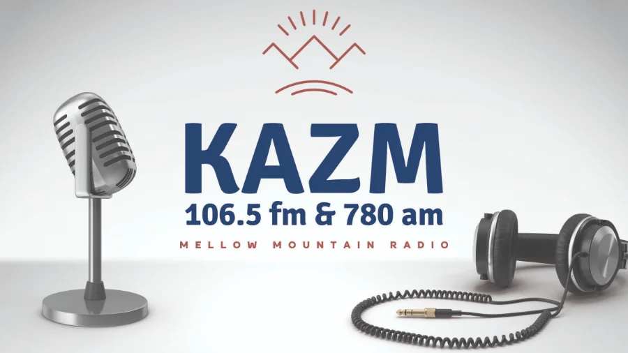
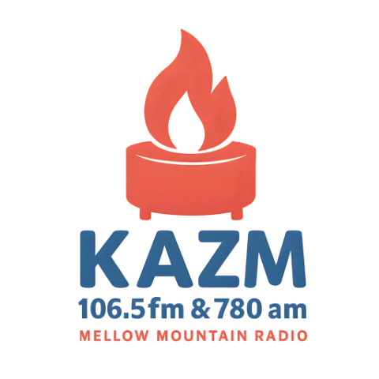
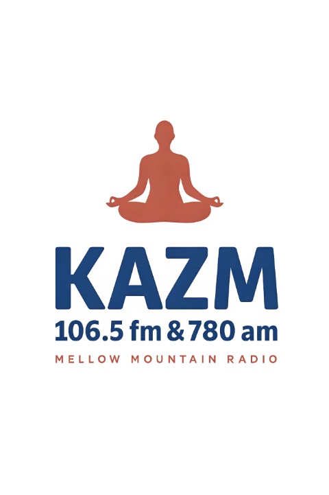
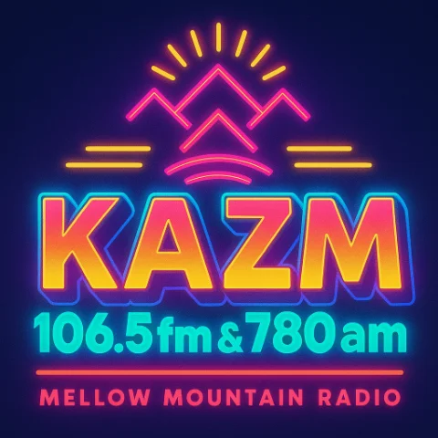
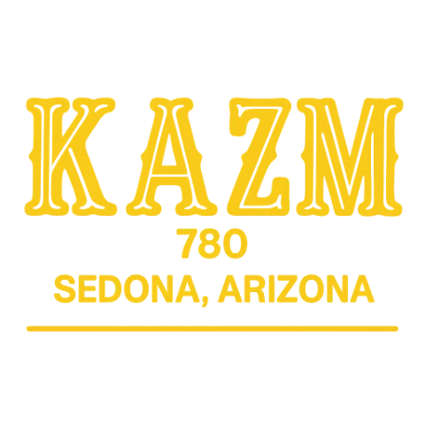

Since 1974
About Mellow Mountain Radio
KAZM is home to expert presenters and producers whose passion is keeping Sedona informed and entertained.
The sound of Sedona
106.5 FM and 780 AM KAZM is home to expert presenters and producers whose passion is to keep Sedona entertained with shows that satisfy everyone. We pride ourselves in providing factual content that helps keep Sedona residents informed and educated throughout the day wherever they are.
Whether you are looking for the latest breaking news, local events, or sports, our station is the remedy to quench your curiosity. KAZM first signed on the air on November 1, 1974, and has been the valley's hometown signal ever since.
Full-service radio
News, sports, weather, and the music Sedona grew up with.
On air since 1974
Fifty years on the dial, and still mellow.


Fifty years on the dial, and still mellow
KAZM signed on November 1, 1974, and has been Sedona's hometown signal ever since. Same easy sound, same valley, now streaming everywhere you are.
The many moods of the mountain
The brand art from the redesign — one station, a few states of mind.





Friends & partners of Mellow Mountain Radio
The local businesses and partners who keep us on the air.